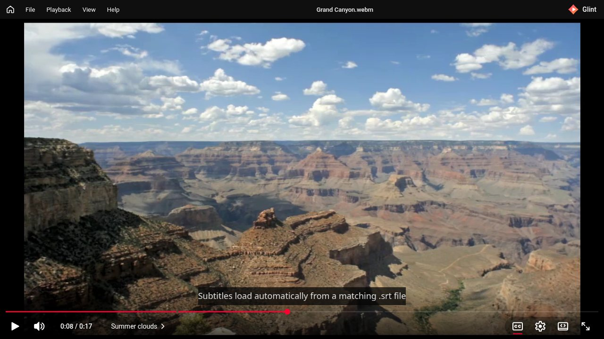
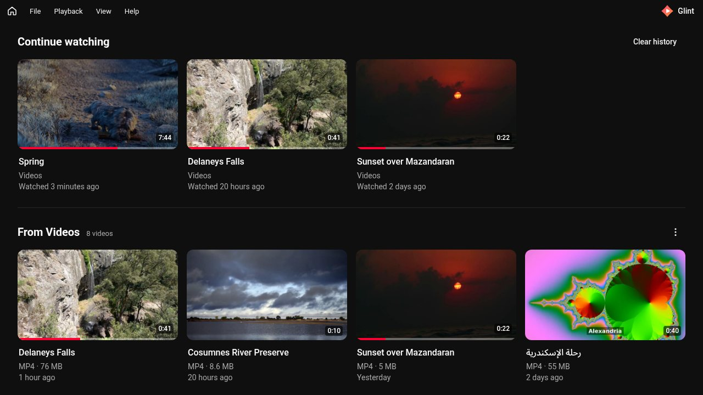
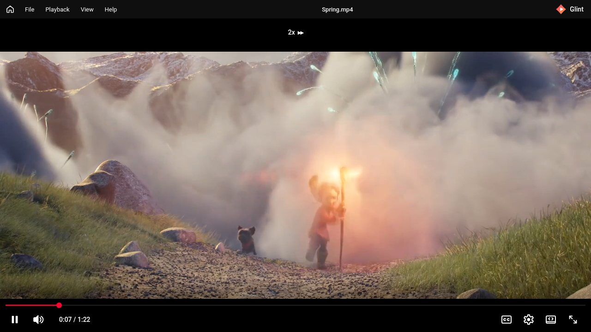

Free & open source · Windows 10 and 11
The YouTube player you already know,
for the videos on your PC.
Glint is a small, fast video player with the same controls, shortcuts, and animations as YouTube. It opens to Continue watching, so what you were watching is one click away. No ads, no account, no telemetry.
Glint is a Windows app. You can still grab the installer for a Windows PC, or browse the source.

Seeing “Windows protected your PC”?
Glint’s installer isn’t code-signed yet, so Microsoft Defender SmartScreen warns about it the first time. That’s normal for new, unsigned apps. Click More info, then Run anyway. Every release lists a SHA-256 you can check with Get-FileHash, and the installer is built from the public source by GitHub Actions.
Everything you expect, nothing you don’t
-
YouTube-style player
Red progress bar with buffering, hover time, and chapters. Volume slider, captions, settings, theater, and fullscreen. The controls fade while you watch.
-
The shortcuts you know
K, J, L, the arrow keys, 0–9, < and >, C, F, T, M. Muscle memory just works.
-
Hold Space for 2x
Tap Space to play or pause. Hold it to play at 2x until you let go, then you’re back to your own speed.
-
Remembers where you stopped
Position, volume, mute, and speed are saved for each file. Continue watching shows thumbnails and progress.
-
Plays almost anything
MP4 and WebM play directly. MKV, AVI, WMV, MOV, FLV, MPEG, and TS go through a small bundled FFmpeg, converted on the fly.
-
Subtitles and chapters
A matching
.srtor.vttloads on its own. Add a.chapters.jsonand the progress bar splits into chapters. -
Updates itself
Glint checks for a new version when it starts and installs it in one click. Updates are signed, and unsigned downloads are refused.
-
Private by design
History, thumbnails, and settings stay on your PC. No accounts, no telemetry, nothing uploaded.
Opens to what you were watching
The home screen shows Continue watching and a shelf for each of your video folders, starting with Windows’ Videos folder. Click a card to resume, or right-click for Play from the beginning.

Hold Space, skip the slow parts
Just like on YouTube, holding Space plays at 2x with a small 2x pill at the top. Let go and Glint goes back to the speed you had, and pauses again if the video was paused.

Keyboard shortcuts
- Space / K
- Play / pause
- Hold Space
- 2x while held
- J / L
- Back / forward 10 s
- ← / →
- Back / forward 5 s
- ↑ / ↓
- Volume ±5%
- M
- Mute
- 0–9
- Jump to 0–90%
- < / >
- Slower / faster
- C
- Captions
- F
- Fullscreen
- T
- Theater mode
- Shift+N
- Next video in folder
Supported formats
MP4 and WebM play directly in Windows’ WebView2. For everything else, Glint’s bundled FFmpeg converts only what’s needed, while you watch. Nothing is written to disk, and seeking works anywhere.
| Format | How it plays |
|---|---|
| MP4 / M4V (H.264, AAC or MP3) | Directly |
| WebM (VP8, VP9, AV1; Opus or Vorbis) | Directly |
| MKV (H.264, HEVC, VP9, AV1) | Repackaged, video not re-encoded |
| MOV, iPhone videos | Directly, or repackaged when needed |
| AC-3 / E-AC-3 (Dolby), DTS, TrueHD, PCM audio | Converted to AAC, 5.1 stays 5.1 |
| AVI, WMV, FLV, MPEG, VOB, TS, M2TS | Converted to H.264 with Windows’ own encoder |
| HEVC (H.265) | Directly with HEVC Video Extensions, otherwise converted |
| Subtitles inside MKV | Not yet (sidecar .srt / .vtt work) |
| Switching audio tracks | Not yet (plays the default track) |
Free and open source
Glint is MIT-licensed, and every line is on GitHub. It’s built with Tauri 2 (Rust) and plain TypeScript, which is why the installer stays small. The bundled FFmpeg is an LGPL build, credited in the app.
Bugs, ideas, and pull requests are welcome.
- MITlicense
- < 6 MBinstaller
- 0ads or trackers
- Win 10 / 1164-bit
FAQ
Is it really free?
Yes. Glint is free and open source under the MIT license. There are no ads, no paid tier, and no account.
Why does Windows say “Windows protected your PC”?
The installer isn’t code-signed yet, so SmartScreen warns about it. Click More info, then Run anyway. You can compare the file with the SHA-256 in the release notes: Get-FileHash .\Glint_<version>_x64-setup.exe.
Does it need admin rights?
No. Glint installs for your user account only. It uses Microsoft Edge WebView2, which is already on Windows 11 and most Windows 10 PCs; if it’s missing, the installer gets it for you.
How do updates work?
A few seconds after Glint starts, it checks GitHub for a new version and offers to install it in one click. Help → Check for updates… checks right away. Updates are signed, and Glint refuses any download that doesn’t match its release key.
Will Glint become my default video player?
Only if you choose it. The installer adds Glint to Open with for common video formats without making it the default. To make it the default, pick Open with → Choose another app, select Glint, and tick Always.
Does Glint collect any data?
No. History, thumbnails, and settings stay on your PC, and View → Clear watch history removes them. Glint has no telemetry and doesn’t upload anything.
Is it affiliated with YouTube?
No. Glint is an independent project that borrows the familiar layout and shortcuts. It is not affiliated with or endorsed by YouTube or Google.